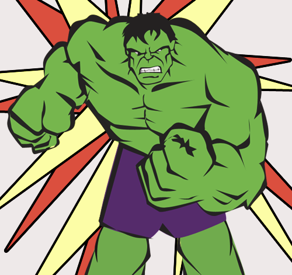
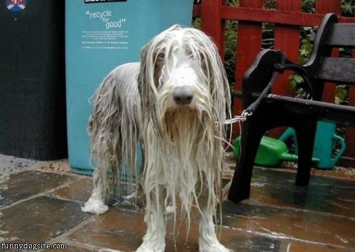

The wind was too strong to wind the sail.

"A" goes before words that begin with consonants.
A chicken crossed the road.
"An" goes before words that begin with vowels.
An owl goes hootie hoot.
Started out by searching on Django snippets and found:
http://djangosnippets.org/snippets/1519/
~ Developed by Chris Beaven
{% load an %}
{{ object|an }} {{ object }} says hootie hoot.
// Output
An owl says hootie hoot.
(Don't Repeat Yourself)

pip install anora
// Template
{% load anora %}
{{ object|anora }} laid a large egg.
// Output
An ostrich laid a large egg.